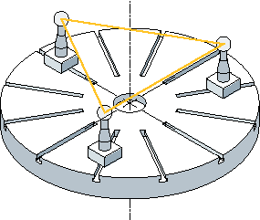
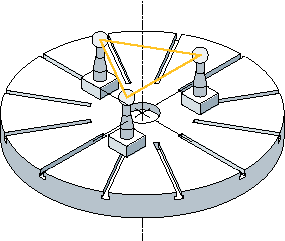
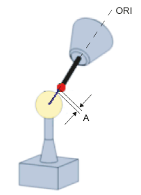

Vermessung einer einzelnen Rundachse
Zur Vermessung einer Rundachse müssen folgende Punkte ausgeführt werden:
-
Montage der Kalibrierkugel auf Maschinentisch (Anwender)
-
Festlegen und Anfahren von drei Kugelpositionen mit der jeweils zu vermessenden Rundachse (Anwender)
-
Festlegen und Anfahren der drei Kugelpositionen mit Messtaster über Linearachsbewegung(en) (Anwender)
-
Abtasten der Kalibrierkugel mit Messtaster in allen drei Kugelpositionen mittels CYCLE996
Montage der Kalibrierkugel
Die Kalibrierkugel ist bei Maschinen auf dem Maschinentisch zu montieren.
Zur Vermessung von Kinematiken für schwenkbare Spannmittel muss die Kugel in das entsprechende Spannmittel aufgenommen werden. In jedem Fall ist sicherzustellen, dass die montierte Kalibrierkugel mit dem Messtaster in allen gewählten Rundachspositionen kollisionsfrei an- und umfahren werden kann.
Die Kalibrierkugel ist unter Beachtung der Kollisionsfreiheit möglichst weit vom Drehzentrum der zu vermessenden Rundachse entfernt zu montieren.
Ein zu kleines resultierendes Dreieck aus den drei Kugelpositionen wirkt sich negativ auf die Genauigkeit des Verfahrens aus:
Kalibrierkugel ausreichend weit vom Drehzentrum montiert, großes Dreieck aufspannbar | Kalibrierkugel zu nah am Drehzentrum montiert, aufgespanntes Dreieck zu klein |
|  |  |
| Hinweis |
Innerhalb der Vermessung einer Rundachse darf die mechanische Fixierung der Kalibrierkugel nicht verändert werden! Unterschiedliche Befestigungspositionen der Kalibrierkugel zum Vermessen der ersten bzw. weiteren Rundachse sind nur bei Tisch- und gemischten Kinematiken zulässig. |
Festlegung der Rundachspositionen
Für jede Rundachse sind drei Messpositionen (Kugelposition) festzulegen. Es ist darauf zu achten, dass die durch die drei definierten Rundachspositionen entstehenden Kugelpositionen im Raum ein möglichst großes Dreieck aufspannen.
Rundachspositionen ausreichend weit voneinander entfernt, großes Dreieck aufgespannt | Rundachspositionen schlecht gewählt, aufgespanntes Dreieck zu klein |
 |  |
Der berechnete Innenwinkel des Winkelsegmentes der Rundachse wird im Parameter TVL überwacht. Winkelwerte < 20 Grad können zu Ungenauigkeiten beim Berechnen der Kinematik führen.
Anfahren der Kugelposition
Zu jeder der drei anwenderseitig festgelegten Positionen der Rundachse muss der Messtaster zu Beginn über der Kalibrierkugel positioniert werden. Das Anfahren der Position darf nur über das Verfahren der Linearachsen (X, Y, Z) geschehen! Die Positionen selbst müssen vom Anwender aufgenommen (eingerichtet) werden. Dazu sind die Positionen mit aktivem Messtaster manuell zu ermitteln.
Bei der Wahl der Anfahrpositionen ist zu berücksichtigen, dass der Messtaster im Rahmen des automatischen Abtastens der Kalibrierkugel stets in seinen Vorzugsrichtungen bewegt wird. Besonders bei Kopf- und gemischten Kinematiken ist darauf zu achten, dass der Startpunkt so gewählt wird, dass in der Anfahrposition der Messtaster mit dem Mittelpunkt der Kalibrierkugel fluchtet.
Startpunkt direkt über der Kalibrierkugel gewählt | Startpunkt seitlich über der Kalibrierkugel gewählt |
 |  |
| Hinweis |
Verfährt die Maschine im Rahmen des Abtastens der Kalibrierkugel nicht wie erwartet, so ist die Grundorientierung und Verfahrrichtung der Rundachsen zu prüfen (DIN-Konformität bei Achsdefinition eingehalten?) |
Startposition
Der Messtaster muss in Richtung der Werkzeugorientierung (ORI) über dem höchsten Punkt der Kalibrierkugel vorpositioniert werden (Messtaster fluchtet mit Kugelmittelpunkt). Der Abstand (A) zur Kalibrierkugel, nach dem Anfahren der Startposition, sollte ungefaehr DFA sein.
Startposition für die Werkzeuglänge bezogen auf den Messtasterkugelumfang
| Hinweis |
Kinematik vermessen ist auch mit aktiver 5Achs-Transformation (TRAORI) möglich. Voraussetzung für das Vermessen der Kinematik mit aktivem TRAORI sind grob eingestellte Vektoren der 5Achs-Transformation. Die Messpositionen zum Vermessen der Kinematik werden im Anwenderprogramm mit aktiver Transformation angefahren. Beim eigentlichen Messen kann die Transformation ein- oder ausgeschaltet werden. SD55740 $SCS_MEA_FUNCTION_MASK |
Vermessen einer einzelnen Kugelposition
Nachdem der Messtaster nach Anwendervorgabe über der Kugel manuell oder per Teileprogramm positioniert wurde (Startpunkt des CYCLE996), wird über den Aufruf des CYCLE996 die Kalibrierkugel abgetastet und die aktuell eingestellte Kugelposition vermessen.
Dazu ist der CYCLE996 für jede Kugelposition separat vom Anwender zu parametrieren und aufzurufen!